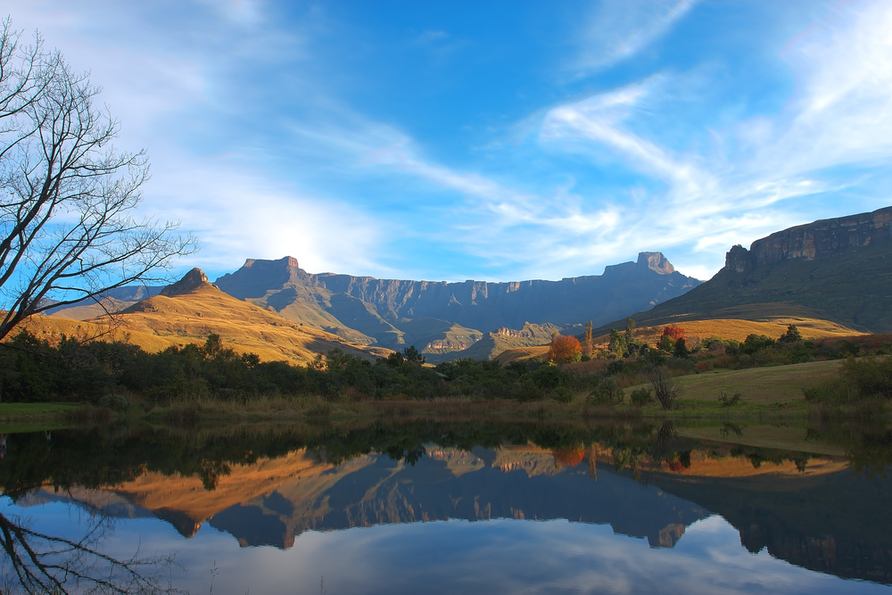

I Bio Tipi
Conoscere e studiare l'ambiente naturale di provenienza di una specie è molto importante, perchè aiuta a capire quello di cui ha bisogno per poter essere allevata in acquario. E' infatti soprattutto dall'osservazione delle specie e del loro comportamento in natura che si possono avere tutta una serie di informazioni utilissime per creare in cattività un ambiente dova possano vivere e riprodursi in modo ideale. Qui poi vedere tre esempi di biotopo, quelli più conosciuti e per i quali è più facile reperire nei negozi le piante e i pesci compatibili.
Africa
 Esempi di AcquariI gradi laghi africani immense distese di acqua dolce, per questo motivo assumono i contorni di un mondo sommerso vario e ampissimo. La loro origine vulcanica ha contribuito a diversificare molto le zone dei laghi e quelle circostanti: rive sabbiose si alternano ad altre prettamente rocciose. All’interno, l’acqua è ricca di sali rilasciati dalle molte rocce presenti e la rendono dura e alcalina. Tali condizioni permangono praticamente immutabili nel tempo, vista la grandezza dei laghi e la scarsa vegetazione.
America del Sud
 Esempi di Acquari
Esempi di Acquari
Questo biotopo è senza dubbio molto particolare, soprattutto per le modalità di formazione. Una foresta amazzonica viene allagata a causa dell’affluenza di molti torrenti e fiumi nel Rio della Amazzoni. Le zone allagate della foresta sono ricche di detriti ottenuti in particolare dalla decomposizione degli organismi vegetali sommersi. Tutto questo genera una fonte di cibo notevole per tanti piccoli animali che e loro volta diventano una grande fonte alimentare per gli avannotti o piccoli pesci. I pesci preferiscono il periodo degli allagamenti per riprodursi: i nuovi nati avranno sempre a disposizione una grande fonte di cibo.
Asia
 Esempi di Acquari
Esempi di Acquari
I pesci che abitano queste paludi hanno dovuto sviluppare molti elementi alternativi per riuscire ad adattarsi alle condizioni che l’habitat propone. Le paludi asiatiche sono di solito ricche di vegetazione, sia negli argini e soprattutto nelle zone aperte, distendendosi nelle pianure asiatiche. Anche dove l’acqua è più alta la vegetazione raggiunge una densità notevole e i pesci presenti si affidano ad altri sensi piuttosto che alla vista, poiché le fitte foglie presenti riducono di molto la penetrazione della luce. Di solito i fondali sono molto fangosi e abbastanza nutrienti